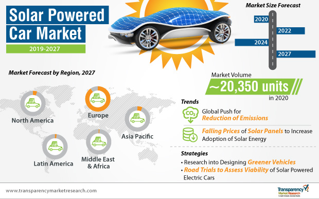
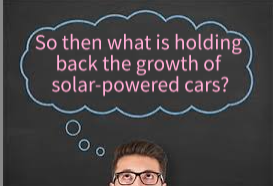

Solar-Powered Cars With Respect to Trends in Oil Production?
According to WorldOMeter, "the world consumes 35,442,913,090 barrels of oil as of the year 2016, equivalent to 97,103,871 barrels per day.
Global oil consumption per capita is 5 barrels of oil (199 gallons) per person yearly (based on the 2016 world population of 7,464,022,049 people) or 0.5 gallons per capita per day.
There are 1.65 trillion barrels of proven oil reserves in the world as of 2016.
The world has proven reserves equivalent to 46.6 times its annual consumption levels. This means it has about 47 years of oil left (at current consumption levels and excluding unproven reserves)"
Our known oil deposits will only last us a few more decades if we continue with this trend. There is a slight possibility that we might discover some new oil
deposits. This could give us extra time, but considering that the rate at which we consume oil is not constant due to the rapidly growing populations that use the reserves,
it is safer for us to explore into alternative renewable sources of energy before it is too late. Revolutionizing the medium that guides our commutes/travels will mitigate this
concern of sustainability and can be achieved via solar panels to power cars.

Benefits and Disadvantages of Solar Technology for Cars
A solar-powered car burns no fuel and does not produce emissions. Thus, it can preserve natural resources and be pollution-free. Pollution
is created only during the manufacturing and transportation of the solar panels/systems. This is negligible compared to pollution created by fuel-powered cars.
The end product for solar-powered cars requires no additional energy and input.
Since they don't depend on external fuel sources, and energy from the sun is unlimited and free, solar cars are free from fuel costs that trouble gas and diesel
cars. Consumers using solar energy don't have to deal with direct costs, unlike those who own electric cars and have to spend a few bucks to charge their battery
from the power outlet or unlike owners of gas-powered cars who spend some on purchase of fossil fuels or biofuels.
They also have high speeds due to their light, low-to-the-ground, and broad base structure. Noise levels are nonexistent due to electric motors, which are relatively
smaller than that of the gas engine, and usually operate without causing noise or vibrations. Maintenance for solar energy systems is low, and easily affordable.
Power harnessed from the sun and converted into energy amounts to a modest 20% efficiency (or 20% of the energy from the sun can be used to power a solar-powered car).
This level of energy efficiency is similar to that of conventional gasoline vehicles, which convert 12-30% of energy from gasoline to power at the wheels. Compared with electric
cars, solar-powered cars fall short since EVs convert over 77% of the electric energy from grid to power at the wheels.

Initial cost of purchasing solar systems(panels, inverter, batteries, and wires for installation) is relatively high. People living in a house for several years can expect the savings
they earn by going solar to compensate for their initial costs. So, installing such a system is a wise decision for those looking to settle in one place for 7-20 years (depends on state).
Major factors inhibiting the practicality of going solar include weather dependency and high space requirements. You will have to ensure that you live in an area with lot of sunshine.
With rainy or cloudy days, the amount of solar energy available will go down. The roof of a car has relatively small surface area. Solar panels covering the whole car produce power for only
a couple of miles, let alone those covering just the roof. A great number of solar panels, along with reliability of strong sunlight in the area, are required to collect enough sunlight.
Storing solar energy can be quite expensive, and can be done only through batteries. The batteries must be charged in the day, so that they can be used in the night when sun is not available.
Summarized in the table below are the pros and cons of a fully solar-powered car.